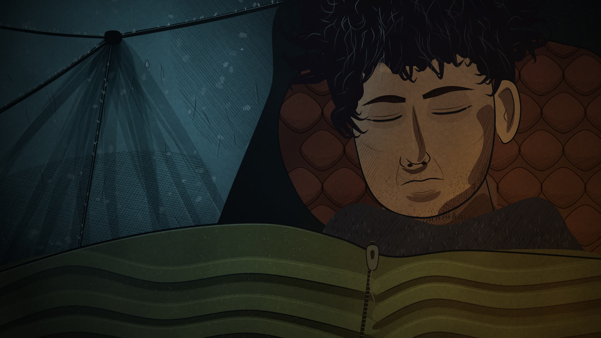
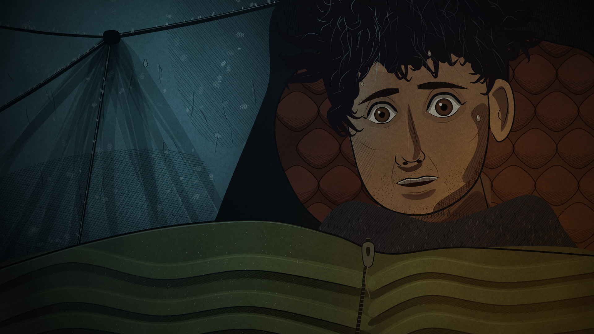
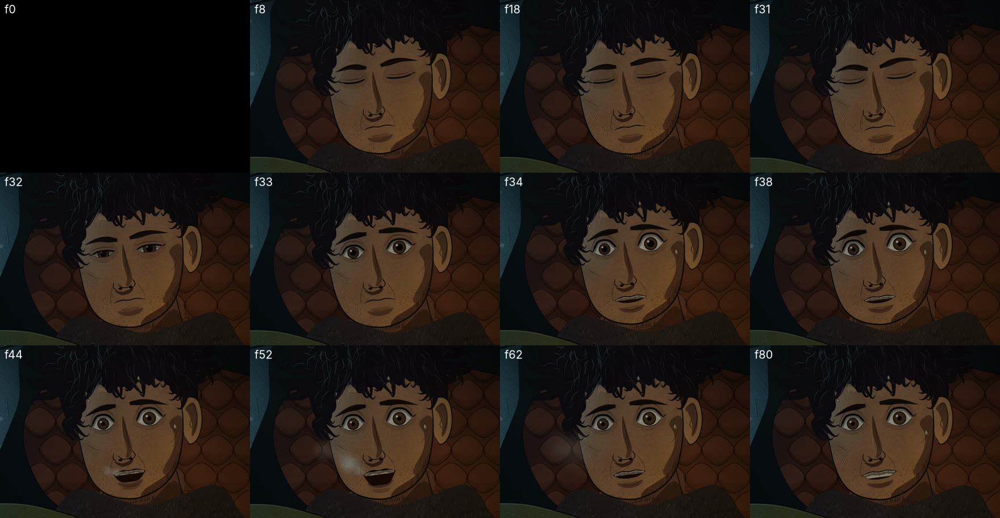
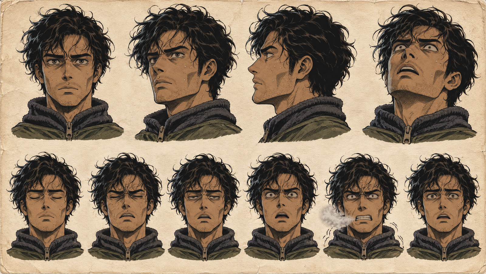
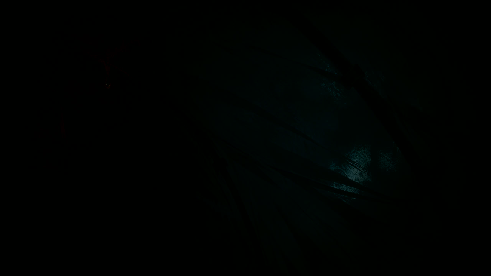
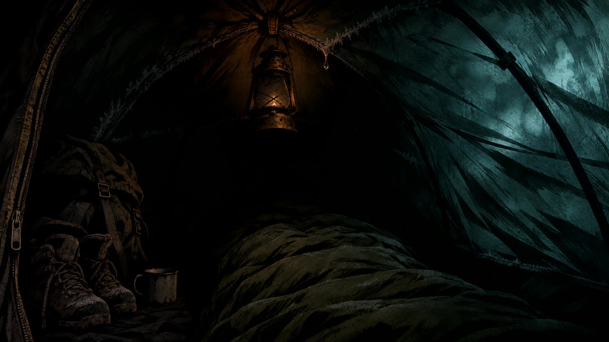
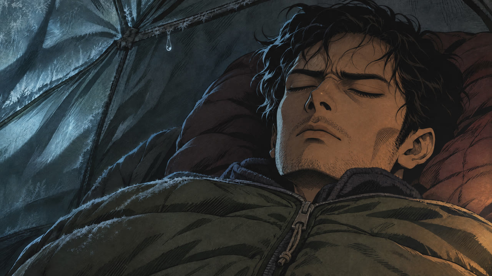
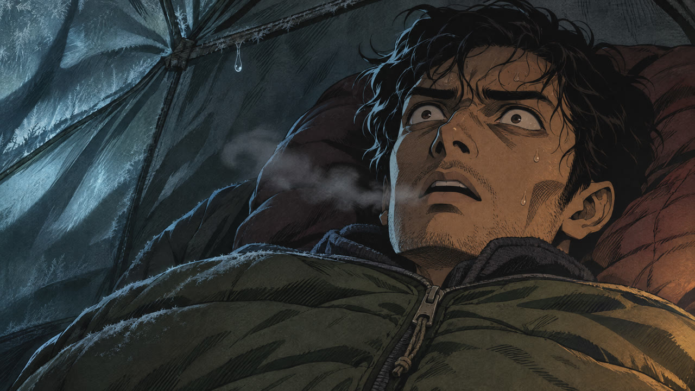
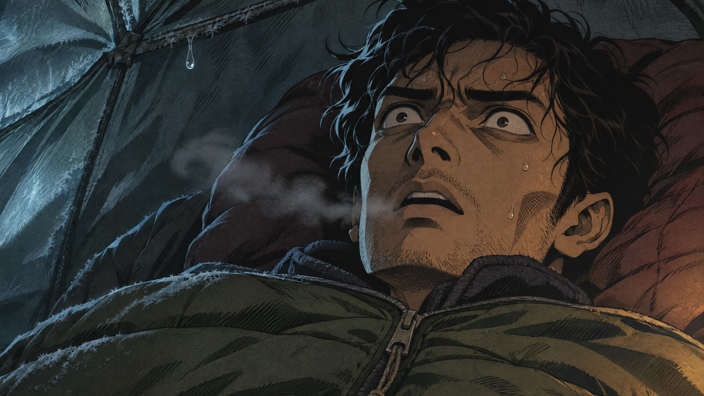
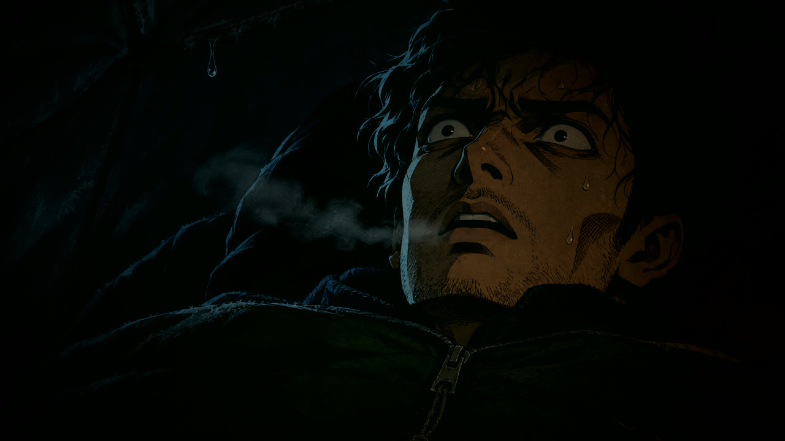

The first ten seconds: a breathing tent, three drips, and Dev's eyes snapping open on the narrator's "खुली". Nothing below has been animated yet. Approve or revise the storyboard, character style and music, and production starts.
No image model anywhere in the render. Dev is a parametric rig: hand-authored curves, variable-width ink lines, hard cel-shade shapes, seeded hatching, procedural hair locks and stubble. The tent, frost, quilting and paper grain are procedural too. The same drawing produces both faces below by changing eye, brow and mouth parameters.



Compared with v1 below, the code version is cleaner and more graphic. The hair is a dense mass of curly locks rather than painted strands, and the shading uses fewer, flatter tones. What code adds is that every expression is a live parameter, so acting can be tuned frame by frame without redrawing anything.

Two shots, one cut. The stills are the real key art; motion is described under each.

Locked. A drop forms on the seam and falls at 0.30. Wind fades in.

Slow push in. The right wall bows inward on each gust. The lantern ember flickers up and a second drip falls at 2.15.
"रात के दो बजकर सत्रह मिनट।"

Cut to the close-up. His lids flutter twice and his brow tightens as anticipation before the snap.
"देव की आँख ऐसे…"

Closed, half, wide on consecutive frames. His pupils contract, his head lifts off the pillow and settles, and the camera jolts once.
"…खुली"

A breath plume in the narration pause, then fine shivering and a sweat bead sliding. At 7.8 his eyes dart left to the tent wall, which presses in once at 8.4.
"…जैसे किसी ने उसे बर्फ़ीले पानी से खींचकर बाहर फेंका हो।"

He goes still and the lantern sinks to about 70%. Segment 02 picks up on exactly this frame, where the heavy thud lands.
Each player is the full 10-second mix with your narration, the tent-wind bed, drips and gasp, so you hear the direction in context. Press play; the page never autoplays.
Low sustained cello and icy breath textures. It matches every other cue in your library, and its built-in impact at 24 s can carry the "something heavy fell" moment later. For the snap I'd add B's sub-hit as a sound effect.
A bowed low drone, an air swell rising into the snap, a sub-drop and metal strike exactly at 5.00, then a thin glass tone and a 96 bpm heartbeat. This is a rough synthesized sketch, not a finished score.
| Time | Cue | Source |
|---|---|---|
| 0.00–10.00 | High-altitude wind on tent fabric, gusts timed to the wall breathing | Your ElevenLabs ambience |
| 0.30 · 2.15 · 3.95 | Water drip with a small tent-room tail | Procedural |
| 0.50 | Narration 1, "रात के दो बजकर सत्रह मिनट।" | Your ElevenLabs take |
| 3.70 | Narration 2, "देव की आँख ऐसे खुली…" | Your ElevenLabs take |
| 5.00 | Eye-snap hit: sub-drop and metal strike | Procedural |
| 5.30 | Sharp gasp in the narration pause | Procedural (an ElevenLabs gasp is an option) |
| 8.40 | Low cloth thump as the wall is pressed from outside | Added in production |
The cold-open narration in your existing takes words the line a little differently from the pasted script. I kept your takes as asked. The "भगवाबासा… चौदह हज़ार फ़ीट" line doesn't fit inside a strict 10 seconds and opens segment 02.